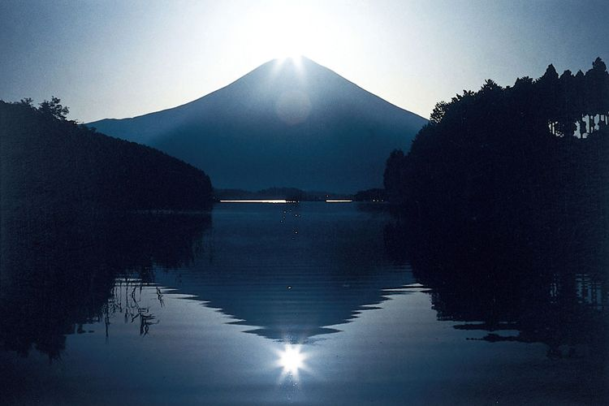
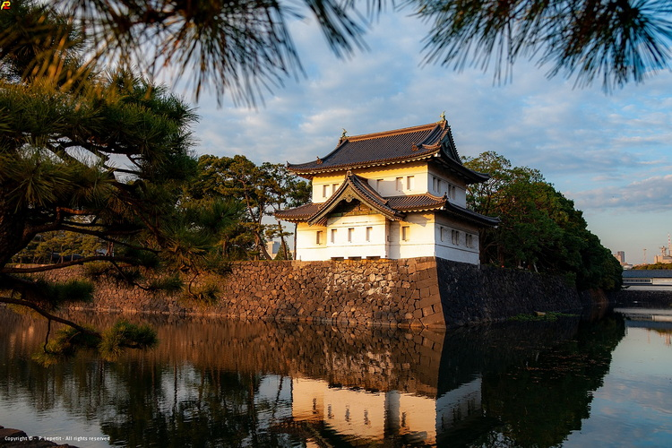
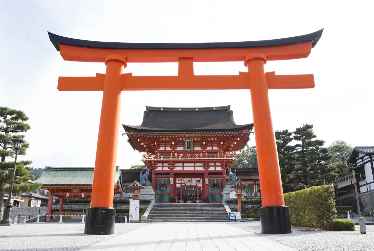

O Monte Fuji é a montanha mais alta do Japão e um ícone nacional. Sua forma cônica e majestosa é visível de várias cidades próximas. Muitos visitantes fazem a trilha até o topo para ver o nascer do sol espetacular.
O Palácio Imperial em Tóquio é um dos principais pontos turísticos do Japão. Embora o acesso ao interior seja restrito, os jardins ao redor oferecem vistas deslumbrantes.
O Santuário Fushimi Inari Taisha é famoso por seus portões vermelhos (torii) que formam um túnel ao longo da trilha da montanha. É o santuário mais visitado pelos estrangeiros no Japão.
